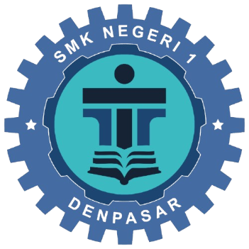

Daftar program kerja dan kegiatan yang dijalankan oleh sekolah
Berfungsi sebagai jembatan antara lulusan dengan dunia kerja, industri, dan perusahaan.
Mendukung pengembangan bakat siswa melalui berbagai kegiatan seperti olahraga, seni, dan organisasi.
Perbaikan dan pengadaan fasilitas sekolah untuk meningkatkan kenyamanan belajar.
Sebagai sertifikator yang menyelenggarakan sertifikasi kompetensi dengan anggota yang memiliki lisensi yang telah diberikan oleh BNSP.
Sebagai sarana siswa dalam mengembangkan keterampilan nya yang nanti akan diperjualbelikan kepada masyarakat dengan tujuan memberikan pengalaman kerja nyata kepada siswa.